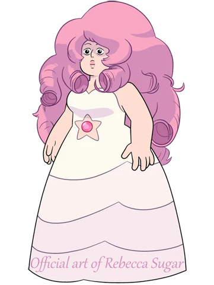
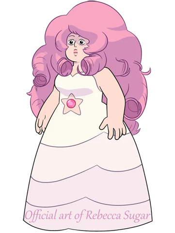

Rose Quartz - Steven Universe
Rose Quartz was my first major build, made in 2018. Her character comes from a cartoon called Steven Universe. There isn't any particular historical research behind her dress, but I certainly had fun recreating it.
At the time, I had very little sewing experience, so the entire skirt is held together by safety pins, which set off several metal detectors and began to fall apart mid-dance with her husband, Greg. It seems to also have caused my feet to vanish from sight, but at least that's accurate to the reference. This photo was taken at a meetup in the Hynes Convention Center in Boston, MA. I haven't a clue who took it.
This project was completed within two months on "con crunch" time. An estimation of cost is roughly $300, excluding value of labor.